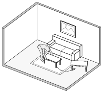
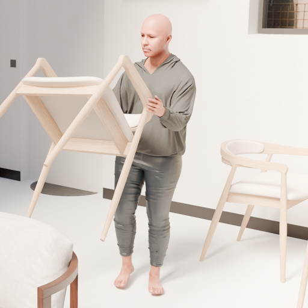
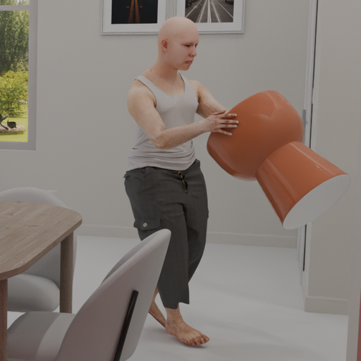
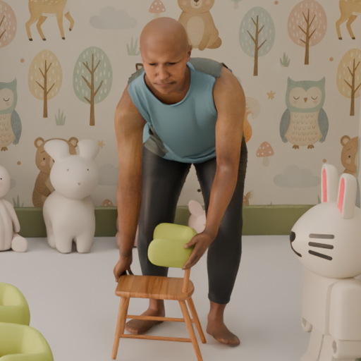
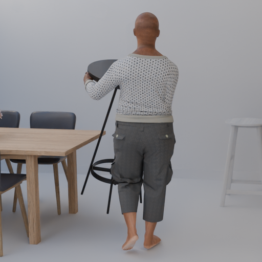
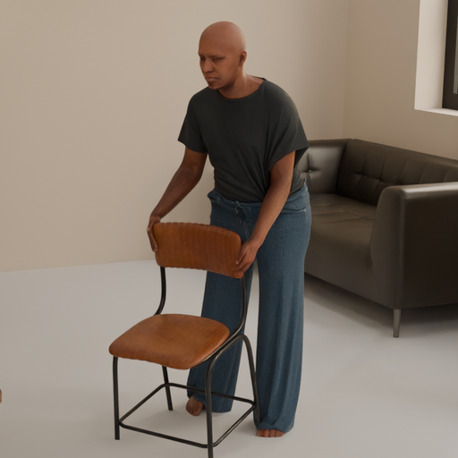
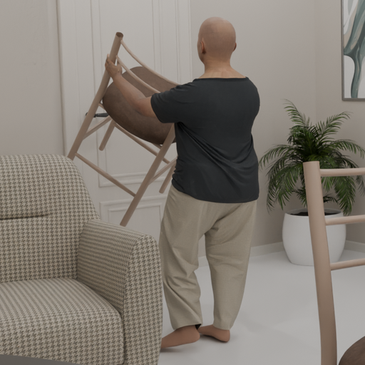
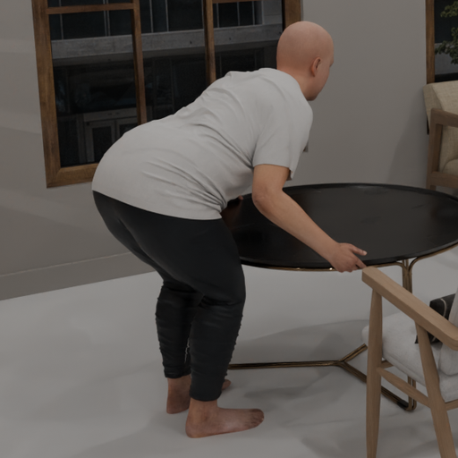
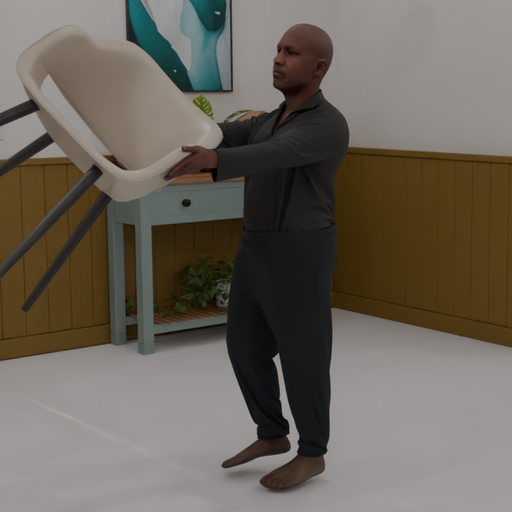
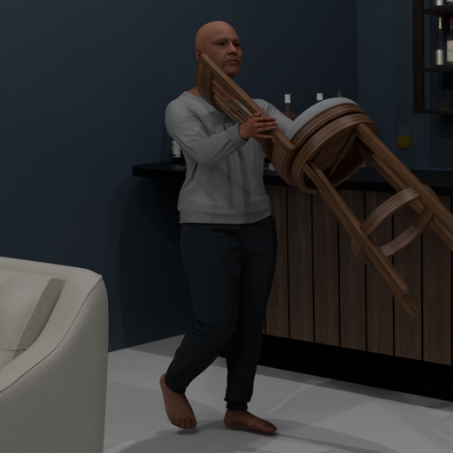

Point tracking
- ~20K 3D tracks per sequence
- Visible and in-frustum masks per camera
- Categorized into body, clothing, carried object, and scene background
Prior synthetic datasets tend to specialize either on human body motion or on rigid object dynamics. Schlepp covers the intersection, with sequences of people grasping, carrying, and placing objects in furnished indoor scenes.
| Type | Frames | Cameras | Ego + Exo | HOI | Multi-actor | Sim. cloth | Dense flow | Point tracks | Dense depth | 3D body + obj poses | |
|---|---|---|---|---|---|---|---|---|---|---|---|
| Spring | Sim | 6K | 2 | – | ✓ | ✓ | ✓ | ✓ | – | ✓ | – |
| Hypersim | Sim | 77K | 1 | – | – | – | – | – | – | ✓ | Obj only |
| PointOdyssey | Sim | 208K | 1 | – | – | ✓ | – | – | ✓ | ✓ | Body only |
| Kubric (MOVi) | Sim | 1.2M | 1 | – | – | – | – | ✓ | ✓ | ✓ | Obj only |
| Syn4D | Sim | 1.4M | 8 | – | – | – | ✓ | ✓ | ✓ | ✓ | Body only |
| BEDLAM 2.0 | Sim | 8M | 1 | – | – | ✓ | ✓ | – | – | Partial | Body only |
| NymeriaPlus | Real | >30M | Multi | ✓ | ✓ | ✓ | Real | – | – | – | MHR + OBB |
| Ego-Exo4D | Real | >100M | 5–6 | ✓ | ✓ | ✓ | Real | – | – | – | Body only |
| Schlepp | Sim | 2.2M | 6 | ✓ | ✓ | ✓ | ✓ | ✓ | ✓ | ✓ | MHR + OBB |
For object interaction, details matter. That is why we provide high-resolution images with dense annotations across cameras.
Rendered colour frames: 8-bit, 30 fps. Camera: body_follow, 1920 × 1080, pinhole.
Schlepp was created by distilling motion from video models. The generated videos are set in existing 3D scenes where we replicate and align the motion.

We want to generate a person picking up an object, moving with it inside the room, and placing it down somewhere else. As we want to use arbitrary objects and scenes, we do not want to rely on motion capture data.
Annotators reviewed every sequence that passed our automatic checks and judged whether the motion and the grasp look plausible. They accepted about 15.9K of 57.2K.
Every actor wears physically simulated garments and shows fabric motion under real body dynamics. Skin textures, body shapes, and clothing combinations are drawn from a diverse pool.









| Name | Resolution | Distortion |
|---|---|---|
static | 1920 × 1080 | pinhole |
body_follow | 1920 × 1080 | pinhole |
object_orbit | 1920 × 1080 | pinhole |
aria_rgb | 2016 × 1512 | KB4 |
aria_slamL | 512 × 512 | KB4 |
aria_slamR | 512 × 512 | KB4 |
[x, y, z, w].facebook/schlepphf download facebook/schlepp \
--repo-type dataset \
--local-dir /data/schlepp \
--include "*_static_rgb.tar" \
"*_bodyfollow_rgb.tar" \
"*_objectorbit_rgb.tar" \
"*_pointtracks.tar" \
"*_metadata.tar" \
"*.parquet"
git clone https://github.com/facebookresearch/schlepp.git
pip install -e schlepp
cd schlepp && python -m scripts.unpack_chunks /data/schleppOnly download the cameras and modalities you need. Chunks are stratified by carried-object category, so a partial download is still representative. Always include *_metadata.tar and *.parquet.
Then, pull the code and install the dependencies. To interface with the dataset, you'll need to unpack the chunks first.
facebookresearch/schleppfrom torch.utils.data import DataLoader
from schlepp import SchleppDataset
from schlepp.utils import resize_sample, subsample_tracks
def to_point_tracker(sample):
sample = resize_sample(sample, short_side=384)
pt = subsample_tracks(
sample["point_tracks"], 512, mode="stratified",
)
cam = sample["cameras"]["body_follow"]
return (
cam["rgb"].permute(0, 2, 3, 1), # (S, H, W, 3)
pt["trajs_2d_pix"]["body_follow"], # (S, 512, 2)
pt["visible"]["body_follow"], # (S, 512)
)
ds = SchleppDataset(
"/data/schlepp",
modalities=["rgb", "point_tracks"],
cameras="body_follow",
seq_len=24,
transform=to_point_tracker,
)
loader = DataLoader(ds, batch_size=4, num_workers=8)
for rgbs, trajs, visibs in loader:
... # train your point trackerExample code to train a point tracker. We provide a Dataset class for Schlepp, which gets you quickly up and running. See the README for full recipes for flow, depth, pose, MHR, and OBB tasks, plus the bundled evaluation and visualisation tools.